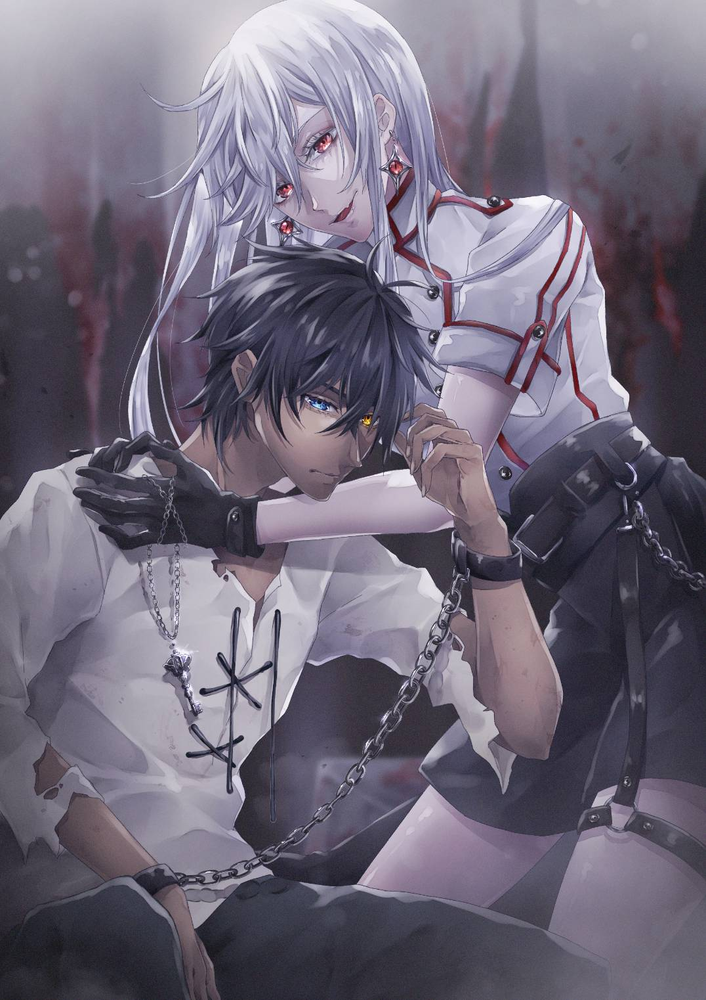

サバトキングダム
～王の血をつぐ少年と門を開きし白銀のカギ
なかえ
・概要
邪神vs妖怪 開幕！ クトゥルー神話と日本神話禁断の邂逅 異色の神話を見届けよ
この小説にはクトゥルー神話TRPGをモデルとした
独自の要素が含まれます。
・『SAN値』 人間の正気度を数値化したもの。一般人のSAN値は100程度。精神面を鍛えることでその数値を伸ばすことが可能。
邪悪な存在を見たり、接触すると低下する。0になると発狂してしまう危険がある。
『裁人』と呼ばれる異能者は自身のSAN値を認識しており、その数値を消費して能力を使用する。
・『A d B』とは
B面のサイコロをA回振ること。SAN値を使用する際に、この要素が登場する。
- 例
- 1d3=1~3 三面ダイスを一回振る
- 2d4=2~8 四面ダイスを二回振る
- 3d5=3~15 五面ダイスを三回振る
あらすじ
第二次世界対戦後、極東の島国『ヤマト』より出現した妖怪により人口の９割が死滅した世界。
生き残った人々は邪神と契約することで『裁器』という名の異能力を手にし、反逆の狼煙を上げる。
そんな世界で記憶喪失の少年は自らが何者かを知ろうと奮闘する。道中、様々な人々との出会いや強大な敵との戦いにより
少年は自らの過去を知り成長していく。
そして展開を左右する『運命の二択』、さらに裁器とSAN値を用いた多彩な戦闘が物語をさらに盛り上げる！
★レビュー
募集中